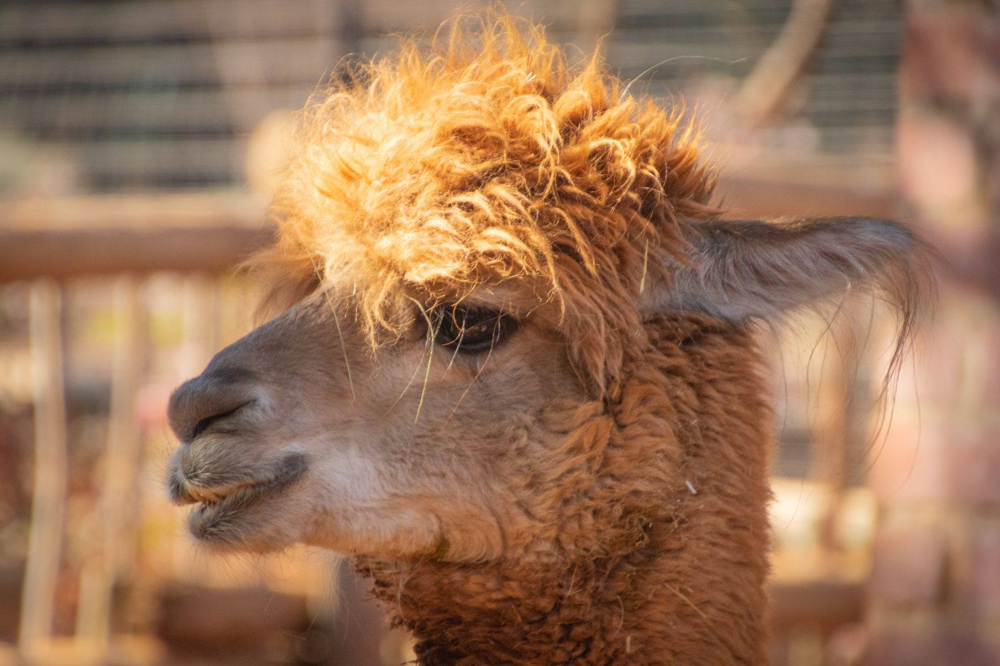

Alpaca

Nome comune: Alpaca
Nome scientifico: Vicugna pacos
Ordine: Artiodactyla
Famiglia: Camelidae
Habitat: Gli alpaca sono allevati in grandi greggi che pascolano ad un'altitudine compresa fra i 3500 e i 5000 metri sulle Ande del Perù meridionale, della Bolivia settentrionale e del nord del Cile.
Riproduzione: Le femmine danno alla luce un solo piccolo all'anno perché il loro periodo di gestazione è di circa 11 mesi e mezzo.
Curiosità: L’Alpaca è un piccolo parente del lama. Non supera i 90 cm di altezza al garrese e i 75 kg di peso. L'alpaca non è ruminante, come tutti i camelidi possiede tre stomaci per la digestione della fibra. In media ogni animale mangia circa un chilogrammo di vegetali al giorno e come tutti i camelidi non ha bisogno di grandi quantità di acqua. Esistono due razze di alpaca: la razza Huacaya e la razza Suri, rappresentando quest'ultima solo il 10% della popolazione degli alpaca nel mondo.